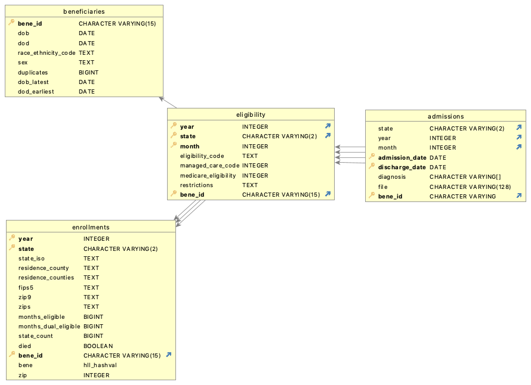

Medicaid: Building a Data Warehouse from ResDac Files
The full Medicaid processing pipeline specification lives under Data Processing Pipelines: medicaid.cwl.
Introduction
Centers for Medicare & Medicaid Services (CMS) provide Medicaid Analytic eXtract (MAX) data. MAX data is exported from SAS into CSV files. We refer to the original MAX data as raw data.
The pipeline steps are wrapped as CWL workflows; see medicaid.cwl.
Importing raw data
Parsing FTS files to generate schema
Pipeline step: parse_fts
The first step is to parse File transfer summary (FTS) included with the data and generate YAML schema for raw data.
File transfer summary (FTS) document contains information about the data extract. These are plain text files containing information such as the number of columns in the data extract, number of rows and the size of the data file. The FTS document provides the starting positions, the length and the generic format of each of the column (such as character, numeric or date)
Parsing FTS is done by running module create_schema_config.
python -m dorieh.cms.create_schema_config
Once the schema is generated, the Universal Data Loader can import the data by running the following command:
python -u -m dorieh.platform.loader.data_loader --domain cms -t ps --incremental --data <path-to-raw-max-files> --pattern "**/maxdata_*_ps_*.csv*"
Data Model
The resulting data model for Medicaid domain is defined by medicaid.yaml
Four main tables are used to fulfill user requests:
|--- beneficiaries
|--- enrollments
|--- eligibility
|--- admissions
{kind=link}

An additional table monthly is only used to generate the tables above
and is not exposed to users. CMS raw data contains
a column for each month and type of data thus producing
hundreds of columns. Monthly table transposes these columns
to create separate records (rows) for each month. One can say it
converts columns to rows, hence we are calling it transposition.
All tables above are physically represented as views inside the database. One can think about views as virtual or computed tables. For efficiency these views can be materialized (materialized view is a database world term). If a view is materialized, PostgreSQL allows building indices on its columns. After indices are built most queries can be executed interactively even on vast amounts of data.
Creation of non-materialized views is instantaneous operation. Technically, it allows performing the same type of queries as with materialized views or physical tables, but many (but not all) queries can be very slow and take hours.
Materializing a view and building indices takes time, often hours but is much faster than importing raw data.
Beneficiaries
Pipeline step: ingest
See also creating Medicare Beneficiaries table
BENE_ID column
Beneficiaries table is based on BENE_ID column in the raw data. The BENE_ID is a unique beneficiary identifier encrypted specifically to the researcher/Data Use Agreement (DUA). This identifier is unique to the Chronic Condition Data Warehouse (CCW) and protects the identity of the Medicaid and/or Medicare beneficiary.
However, BENE_ID are unreliable. About 7% of records are missing BENE_ID. There are records with conflicting information such as different dates of birth, dates of death, sex and ethnicity that have the same BENE_ID. Sometimes the date of birth differ by 80 (eighty) years.
Official documentation states in the section Assignment of a Beneficiary Identifier:
To construct the CCW BENE_ID, the CMS CCW team developed an internal cross-reference file consisting of historical Medicaid and Medicare enrollment information using CMS data sources such as the Enterprise Cross Reference (ECR) file. When a new MAX PS file is received, the MSIS_ID, STATE_CD, SSN, DOB, Gender and other beneficiary identifying information is compared against the historical enrollment file. If there is a single record in the historical enrollment file that “best matches” the information in the MAX PS record, then the BENE_ID on that historical record is assigned to the MAX PS record. If there is no match or no “best match” after CCW has exhausted a stringent matching process, a null (or missing) BENE_ID is assigned to the MAX PS record. For any given year, approximately 7% to 8% of MAX PS records have a BENE_ID that is null. Once a BENE_ID is assigned to a MAX PS record for a particular year (with the exception of those assigned to a null value), it will not change. When a new MAX PS file is received, CCW attempts to reassign those with missing BENE_IDs.
Deduplication and data cleansing
As discussed above, about 7% of patient summary records are missing
BENE_ID column and thus are excluded from Beneficiaries and all
subsequent tables, containing processed data.
Also, as we have discussed, sometimes data for beneficiary is
inconsistent. Specifically, there are records that have the same
BENE_ID but different dates of birth and/or dates of death.
We combine all records with the same BENE_ID into a single record in
the Beneficiaries table, using GROUP BY SQL clause.
When there are inconsistent raw data for a given BENE_ID,
we apply the following rules:
A record is clearly marked as containing duplicates. a column
duplicatescontains the number of inconsistencies using the following specification:source: "COUNT(distinct {identifiers})"where
{identifiers}refers to a list of columns marked as identifiers, in our case:dob
dod (date of death)
race_ethnicity_code
sex
Identifier columns for the combined record are filled by applying the following rules:
dob: the earliest raw DOB
dod (date of death): the latest raw DOD
race_ethnicity_code: comma separated list of codes
sex: comma separated list of sexes
Additional columns are added to the record:
dob_latest: the latest raw DOB
dod_earliest: the earliest raw DOD
This is an application of the
disambiguation rules pattern; the
Medicare model names the counter column discrepancies and additionally
surfaces consistent_* QC flags.
This allows a project curator to apply various rules to include or exclude records where data for beneficiaries is inconsistent. For example, the curator can:
Exclude all inconsistent records
Exclude records with inconsistent dates of death (legacy strategy)
Exclude records where difference between dates of birth is more than 3 years
etc.
One caveat: we have noted that about 7% of records do not have BENE_ID, and we do not know whether this is the result of some kind of systematic error. For example, it might be that beneficiaries from certain neighbourhoods are missing this data.
Enrollments
See also Medicare Enrollments table.
Enrollments table summarizes enrollments of
beneficiaries in medicaid in specific states
during specific years. From technical point of view
it is an SQL view comprising collection
of raw records grouped by:
BENE_IDYear
State
Additional columns added to the view for convenience:
state_iso: ISO code of the state, used for mapping
residence_county: one of the “latest” residence counties where the beneficiary was registered, latest in alphabetical order
residence_counties: comma separated list of all “latest” residence counties, where a beneficiary was registered during the year
fips5: 5 digit FIPS code of the
residence_countyzip: one of the “latest” zip codes where the beneficiary was registered, latest in numerical order
zips: comma separated list of all “latest” zip codes, where a beneficiary was registered during the year
months_eligible: a number of months in the year the beneficiary was eligible for medicaid
months_dual_eligible: a number of months in the year the beneficiary was eligible for both medicaid and medicare
state_count: number of states, where the beneficiary was enrolled in medicaid during the year. Note, this is also the number of records for this beneficiary and this year in the
Enrollmentstable.died: a boolean flag indicating that the beneficiary has died during this year while being registered for medicaid in this state.
Quoted “latest” points to the fact that multiple “latest” counties or zip codes signal data inconsistency rather than a simple fact that a beneficiary could have moved during the year.
Eligibility
The Eligibility table is a breakdown by month of beneficiaries’
enrollments in Medicaid: it contains one row per beneficiary, year,
month and state. It is derived from the intermediate monthly view,
which transposes the per-month columns of the raw data into separate
rows (see Data Model). Monthly granularity matters for
Medicaid because, unlike Medicare, Medicaid eligibility is volatile and
can change from month to month.
Inpatient Admissions
Table with all inpatient admissions billed to Medicaid with admission and discharge dates and ICD codes.
Pipeline
See Medicaid workflow for details
┌────────────────────────────────────┐
│ Initialize and prepare the database│
└─────────────────┬──────────────────┘
│
┌────────────────────────────────────┐
│ Parse FTS and generate YAML Schema │
└─────────────────┬──────────────────┘
│
┌─────────────────▼──────────────────┐
│ Import Patient Summary (ps) Files │
└─────────────────┬──────────────────┘
│
┌─────────────────▼──────────────────┐
│ Build Indices for Patient Summaries│
└─────────────────┬──────────────────┘
│
┌─────────────────▼──────────────────┐
│ Create Beneficiaries View │
└─────────────────┬──────────────────┘
│
┌─────────────────▼──────────────────┐
│ Build Indices for Beneficiaries │
└─────────────────┬──────────────────┘
│
┌─────────────────▼──────────────────┐
│ Create Intermediate monthly view │
└─────────────────┬──────────────────┘
│
┌─────────────────▼──────────────────┐
│ Build Indices for Monthly Data │
└─────────────────┬──────────────────┘
│
┌─────────────────▼──────────────────┐
│ Create Enrollments View │
└─────────────────┬──────────────────┘
│
┌─────────────────▼──────────────────┐
│ Build Indices for Enrollments │
└─────────────────┬──────────────────┘
│
┌─────────────────▼──────────────────┐
│ Create Eligibility View │
└─────────────────┬──────────────────┘
│
┌─────────────────▼──────────────────┐
│ Build Indices for Eligibility │
└─────────────────┬──────────────────┘
│
┌─────────────────▼──────────────────┐
│ Import Inpatient (ip) data into │
│ admissions table │
└─────────────────┬──────────────────┘
│
┌─────────────────▼──────────────────┐
│ Build Indices for Admissions │
└────────────────────────────────────┘